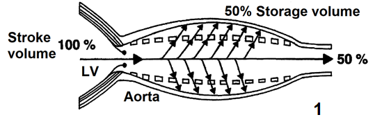
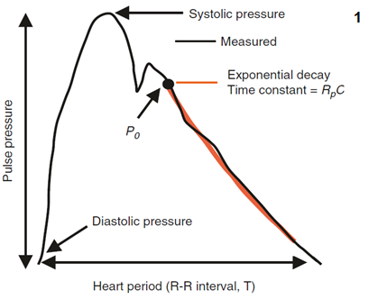
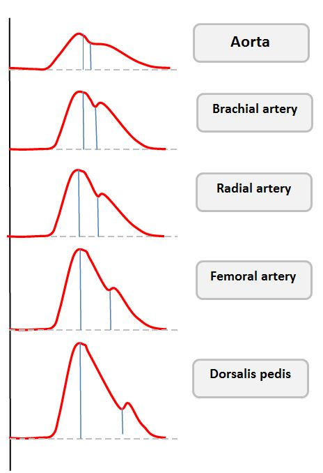

Module I4
Interface I: LV to the arterial system
Module I3 ended by establishing that a trace can be trusted, and that a number referenced to the room is not the same quantity as a pressure across a wall. This module assumes the trace in front of you is faithful and asks the next question: what does its shape mean, and what has to be true of the ventricle and the arteries to produce it.
The four-interface model in Module N4 put the first interface between the left ventricle and the arterial system, and Module I1 showed that one hydraulic relationship describes all four. What neither could do, because both were building a map rather than a mechanism, is explain why the arterial system has the properties it does. Why blood ejected in a fraction of a second arrives at the capillaries as a nearly steady stream. Why the systolic pressure at the radial artery is not the systolic pressure at the aortic root, while the mean is. And why a ventricle can generate a perfectly respectable blood pressure while wasting most of the energy it spends doing so.
The organising idea is that the arterial system is not a passive set of pipes. It is an elastic reservoir that stores half of every stroke volume and gives it back during diastole, and the ventricle filling it is coupled to it in a mechanically specific sense. Both halves of that coupling are measurable, both change in critical illness, and the pressure on the monitor is a joint product of the two.
The interface, stated exactly
Interface I is the pressure drop from the aortic root to the point at which arterial flow ends, taken across the systemic resistance:
Two features deserve attention before anything else. The first is the downstream term. The pressure arterial flow drains into is not the right atrial pressure. Arterioles are collapsible vessels with active tone, and flow through them stops at a positive pressure, the critical closing pressure, well above right atrial pressure. That is why the complete form carries a Pcrit term and the version computed by every bedside monitor does not, a point I1 made about the calculated systemic vascular resistance, which uses MAP minus RAP as its numerator and therefore contains a known and unmeasured error. Module I5 derives Pcrit properly. Here it is the boundary of the module: everything upstream of the arteriolar outlet is Interface I, everything downstream is Interface II.
The second feature is that mean arterial pressure, alone among the pressures on an arterial trace, is a property of the circulation rather than of the recording site. Because systemic resistance is concentrated in the small arteries and arterioles, the pressure drop along the conduit arteries is negligible, so a femoral catheter and a radial catheter sample essentially the same mean pressure while reporting very different systolic pressures. That is why MAP appears in the interface equation and systolic pressure does not.
What the equation cannot show is that the interface has a second job beyond setting a mean. The left ventricle delivers its output in about a third of the cardiac cycle and the tissues require flow throughout. Converting one into the other is the work of the arterial reservoir, and the way it does that work determines the shape of everything you read.
The arterial system as a Windkessel
The Windkessel model is named for the air chamber of a hand-operated fire engine. Each pump stroke compresses an enclosed volume of air above the water, and the compressed air pushes water out of the hose continuously between strokes. An intermittent source plus a compliant chamber plus a resistive outlet produces steady output.
![Three panel figure. Top panel shows a fire engine with a canal, a hand pump, a Windkessel air chamber and a spout with a fireman directing water at a burning house. Middle panel shows the circulatory equivalent drawn in the same style with veins, heart, elastic conduit arteries and peripheral resistance. Bottom panels show the same system as a hydraulic schematic with characteristic impedance at the aortic root, an air chamber labelled C for compliance, and a resistance labelled Rp, then as an electrical circuit with Zc in series and C and Rp in parallel.](img/hemodynamics-module-v2022-full_slide136_9ada6248.png)
Read as a circuit, the Windkessel can be constructed with increasing numbers of elements, each added component capturing another aspect of the arterial load imposed on ventricular ejection. The commonly used three-element model includes the characteristic impedance of the proximal aorta, written Zc, which represents the load encountered during the earliest part of ejection before reflected waves return from vessel bifurcations and depends on proximal aortic geometry, wall properties, and the inertia of the blood being accelerated. The second element is total arterial compliance, C, dominated by the aorta and other large elastic arteries. The third is total peripheral resistance, Rp, the opposition to mean flow imposed mainly by the small arteries and arterioles, which sets mean arterial pressure for a given cardiac output and governs the rate of pressure decay between beats. Together, these elements reproduce much of the gross arterial pressure waveform, but the model remains lumped and therefore cannot represent the actual travel and reflection of pressure waves through the arterial tree. A four-element Windkessel adds total arterial inertance, L, which represents the resistance of the blood mass to changes in velocity. Unlike peripheral resistance, which opposes flow, inertance opposes the acceleration and deceleration of flow and therefore captures an additional component of the dynamic load faced by the ventricle. The four-element model is mainly preferred in research or detailed modelling settings, where a more precise representation of arterial load is needed.
Stroke volume and storage volume are different quantities
During systole only part of the stroke volume reaches the peripheral circulation. The rest distends the elastic arteries and is held there until diastole. That held fraction is the storage volume, and its ratio to stroke volume is the storage volume fraction.

Belz's review of the elastic properties and Windkessel function of the human aorta puts the systemic storage volume fraction at approximately 50 percent. In the pulmonary circulation, where the vessels are considerably more compliant, Karatzas and Lee's analysis of pulsatile capillary flow puts it nearer 67 percent. The fraction rises with arterial compliance and with peripheral resistance, since both favour retention in the reservoir, and falls when the arteries stiffen.
This distinction changes how the Windkessel contribution to systolic pressure should be understood. The pressure generated as the arterial reservoir fills depends on the volume actually stored during systole, not simply on stroke volume itself. A young adult with a compliant aorta and a stroke volume of 80 mL stores about 40 mL and generates a modest systolic pressure. An eighty-year-old with the same stroke volume and a stiff aorta stores less, delivers more of it immediately, and generates a considerably higher systolic pressure for exactly the same ejected volume, with nothing about the ventricle changed.
The arterial time constant
Once the aortic valve closes, inflow stops and the reservoir empties through the peripheral resistance. A compliant chamber draining through a fixed resistance decays exponentially, and one quantity describes the decay.

The decay is not truly exponential, for two reasons. Arterial compliance is itself pressure dependent, so the reservoir is stiffer at high pressures and no single constant governs the whole range. And wave reflection superimposes returning pressure on the decay. Neither objection removes the usefulness of the concept, which is that the arterial system has a characteristic emptying time, and the relationship between that time and the length of the cardiac cycle determines how much pressure is left when the next beat arrives. Chemla and colleagues made that explicit in 31 adults studied at cardiac catheterisation, finding that the heart period normalised by the diastolic time constant was proportionally related to pulse pressure divided by mean aortic pressure. The quantitative treatment of the time constant belongs to the Expert pathway.
Reading the waveform, feature by feature
Every landmark on an arterial trace is produced by an identifiable physical event and modified by the properties of the reservoir it propagates through. Take them in the order they occur.
![Two panel annotated arterial pressure waveform. The upper panel labels the anacrotic limb on the ascending portion and the dicrotic limb on the descending portion, with the periods of systole and diastole marked below. The lower panel labels systolic uptake on the upstroke, peak systolic pressure at the apex, systolic decline on the early descent, the dicrotic notch, diastolic runoff on the late descent, end-diastolic pressure at the trough, and pulse pressure as the vertical distance between peak and trough.](img/hemodynamics-module-v2022-full_slide114_6e3fe716.png)
The systolic upstroke
The upstroke begins the moment left ventricular pressure exceeds aortic pressure and the valve opens. Its slope is set by three things in series: how fast the ventricle develops pressure and ejects, whether anything obstructs the outflow, and how readily the proximal aorta accepts what arrives. Greater inotropy produces a steeper upstroke. Fixed outflow obstruction blunts it and delays the peak, the mechanism of pulsus parvus et tardus in aortic stenosis. Reduced proximal compliance sharpens the ascent, because a vessel that will not distend converts flow into pressure immediately.
It is tempting to read the upstroke as a contractility monitor, and the temptation should be resisted. The relationship between the rate of pressure rise on a peripheral trace and left ventricular contractility is contested, with some studies finding the radial waveform predicts left ventricular systolic function and others finding it does not. That is unsurprising once you notice the same slope is jointly determined by the ventricle, the valve, and the compliance of everything between the valve and the catheter. A change in slope in one patient over minutes, with vascular properties unchanged, is informative. A single slope against a population norm is not.
Peak systolic pressure
The peak has three determinants: contractility, which sets how forcefully the volume is delivered, arterial compliance, which sets how much the proximal vessels expand to receive it, and wave reflection, which sets how much returning pressure is added to the forward wave while ejection is still in progress.
Loss of compliance raises the peak twice over, and the second mechanism is the one clinicians tend to miss. A stiff, atheromatous aorta cannot distend to accept the storage volume, so pressure rises higher for the same ejected volume. Separately, a stiff aorta conducts the pressure wave faster, so waves reflected from downstream branch points return sooner. When they return during systole rather than diastole they summate with the forward wave and raise the peak further. This second contribution is central systolic pressure augmentation, and its magnitude depends on both the size of the reflected wave and the moment it arrives.
![Two arterial pressure waveforms side by side under the heading that reduced arterial distensibility in the elderly causes early reflection of pressure waves. The young waveform on the left has a rounded systolic peak and a well preserved diastolic pressure. The elderly waveform on the right has a taller late systolic peak marked with an arrow and a steeply falling diastolic limb. Bullet points below list increasing pulse pressure, a late systolic pressure peak, and attenuation of the diastolic pressure wave.](img/hemodynamics-module-v2022-full_slide117_c5c89f71.png)
Both reduced compliance and augmented reflection raise wall stress and myocardial oxygen demand, and where a vessel or a clot is fragile, as after haemorrhage or in aneurysmal disease, high peak pressures can dislodge a haemostatic thrombus or precipitate rupture. Those are the situations in which treating a systolic number rather than a mean is actually justified.
Systolic decline and the dicrotic notch
The decline marks the transition from active ejection to passive recoil, and it is steeper when compliance is low because a stiff wall releases its stored energy quickly. The dicrotic notch, or incisura, is generated by aortic valve closure and the brief retrograde flow that rebounds against the closed valve. That is the event, but the notch on the trace is not simply a timestamp for it. Its position and depth are shaped by the interaction of the forward wave with returning reflected waves, so the notch moves when the arterial tree changes even though the valve has not.
The two directions point at opposite pathologies. A notch shifted rightward and low or poorly defined indicates markedly reduced systemic vascular resistance with impaired wave reflection, the signature of vasoplegia and severe distributive shock: forward flow escapes rapidly into a dilated periphery, the backward waves that would normally sharpen the notch are delayed and diminished, and diastolic pressure has already collapsed by the time the valve closes. A notch shifted leftward, toward the systolic peak, indicates poor arterial compliance, where reflected waves return early and the late-systolic contour is compressed. Hernandez, Messina and Kattan make the case that an invasive arterial line is underused when only the mean is read from it, and the notch is a large part of what is thrown away.
Diastolic runoff and end-diastolic pressure
Diastolic runoff is the decay of arterial pressure as the reservoir empties with the valve shut, and its slope is governed by the arterial time constant. A steep downslope means a short time constant, in practice low systemic vascular resistance, as with vasodilators or septic shock, or reduced compliance. A shallow downslope means a long time constant, as in cardiogenic shock or intense sympathetic vasoconstriction.
The end-diastolic pressure, which is the diastolic blood pressure on the trace, is simply where that decay has got to when the next beat interrupts it. Diastolic pressure therefore has two determinants and only two: the arterial time constant, and how long diastole lasts, which is set by heart rate. Tachycardia truncates the decay and raises diastolic pressure, bradycardia allows it to run further and lowers it. This is what makes diastolic pressure a window on vascular tone, and why the ratio of heart rate to diastolic pressure (DSI, Diastolic Shock Index) carries information neither number carries alone. The clinical use of that ratio, and of the wide and narrow pulse pressure as bedside signals, is taken up in Module I2.
One condition breaks the account. All of it assumes a competent aortic valve. In aortic regurgitation the reservoir empties backwards into the ventricle as well as forwards into the periphery, diastolic pressure falls far below what the time constant predicts, and pulse pressure widens for a reason that has nothing to do with vascular tone.
Systolic, diastolic and pulse pressure do not move together
The three numbers a monitor displays are generated by different mechanisms, and treating them as one quantity called "the blood pressure" discards most of what they carry. Lamia and colleagues review the physiological basis for interpreting the full arterial pressure set, rather than a single number, at the bedside.
| Quantity | Set by | Rises when | Falls when |
|---|---|---|---|
| Systolic pressure | LV stroke volume and intrinsic contractility, storage volume, total arterial compliance, and the timing and magnitude of wave reflection | Arteries stiffen, reflections return during systole, stroke volume rises, characteristic impedance rises | Stroke volume falls, outflow is obstructed, contractility falls |
| Diastolic pressure | The arterial time constant (Rp × C) and the duration of diastole (heart rate) | Resistance rises, compliance rises, heart rate rises | Resistance falls, compliance falls, heart rate falls, aortic regurgitation |
| Mean pressure | Cardiac output and systemic vascular resistance, read as the area under the trace | Either cardiac output or systemic vascular resistance rises | Either falls, and the fall is not attributable without measuring one of them |
| Pulse pressure | The difference, so anything that moves systolic or diastolic moves it | Stiff arteries, hyperdynamic circulation, distal recording site, an underdamped line | Low stroke volume, proximal recording site, an overdamped line |
Read the mean pressure row against the other three and the central problem of arterial monitoring appears. Mean arterial pressure is the term in the interface equation and the one variable stable across recording sites, which makes it the right number to titrate to. It is also the number carrying the least information about mechanism, because a given MAP is consistent with any combination of cardiac output and resistance whose product is the same. The systolic and diastolic pressures carry the mechanism, and they are the two most corrupted by the recording system and by the site of measurement. The practical consequence is that MAP is what you treat while the contour is what you reason from.
Note also that two entries in the pulse pressure row are artefacts of the recording system rather than physiology. I3 gives the fast flush test that separates them in seconds, and doing it before interpreting a pulse pressure is what separates a reading from a guess.
Pulse pressure amplification, and why a radial trace is not an aortic trace
The waveform changes systematically as it travels away from the heart. Moving distally, the upstroke becomes steeper, the systolic peak becomes higher, the dicrotic notch appears later in the cycle, and the diastolic runoff falls lower. Systolic pressure rises and diastolic pressure falls, so pulse pressure widens, while mean pressure stays nearly constant. This is pulse pressure amplification.

The mechanism is mainly due to wave reflection. Peripheral arteries are smaller, less compliant and closer to the arteriolar reflection sites, so the forward and backward waves synchronise earlier in the cycle and summate more completely there. Pulse wave velocity rises as the vessel stiffens. The Moens-Korteweg relation makes the dependence explicit: wave speed goes as the square root of the elastic modulus and wall thickness, divided by the radius and by blood density, so a stiffer or thicker wall speeds the wave and a wider vessel slows it. Characteristic impedance is derived from that wave speed rather than the cause of it. The full treatment of pulse wave velocity, wave separation into forward and backward components, and the augmentation index belongs to the Expert pathway.
The magnitude is larger than most clinicians assume. Pauca and colleagues cannulated both the radial artery and the ascending aorta in 51 patients undergoing coronary artery bypass grafting. Radial systolic pressure exceeded aortic systolic by 12 (S.D. +/- 1 mmHg), while radial mean differed from aortic by minus 0.8 (S.D. +/- 0.3 mmHg) and radial diastolic by minus 1.0 (S.D. +/- 0.3 mmHg). The averages understate the individual variation: radial systolic was 4 to 35 mmHg higher than aortic in 42 of the 51 patients, and 10 to 35 mmHg higher in 26 of them. The radial trace explained 44 percent of the variance in aortic systolic pressure, 90 percent of aortic diastolic and 98 percent of aortic mean.
Three consequences follow. First, a radial systolic pressure is not an estimate of the pressure the ventricle ejected against. The ventricle sees the central pressure, so when a decision turns on ventricular load, as in titrating a vasodilator for aortic dissection, the peripheral systolic number is systematically misleading and the mean is not. Second, a femoral line and a radial line reporting different systolic pressures are usually both correct. Amplification is smaller at the femoral artery, so a femoral trace with a lower systolic and a narrower pulse pressure is expected rather than evidence of damping. Compare the means, which should agree within a few mmHg, and if they do the difference is anatomy rather than fault.
Third, amplification is protective, and losing it is a marker of disease. The normal stiffness gradient between the aorta and the muscular arteries shields the ventricle from the peaks a cuff or a radial line records. With ageing the central arteries stiffen disproportionately, the gradient flattens, amplification falls, and central systolic pressure rises toward the peripheral value. Avolio and colleagues review the evidence that this loss is itself associated with cardiovascular risk, and Chirinos and colleagues place it within the broader picture of large-artery stiffness. The gradient can also invert, so that central pulse pressure exceeds peripheral, a specific feature of sepsis taken up in Module I6.
![Four panel figure comparing an adolescent and a middle aged subject. The upper two panels show aortic pressure over one beat, with an arrow marking where the reflected wave arrives. In the adolescent the arrow points at a small inflection during diastole after the dicrotic notch. In the middle aged subject the arrow points at an inflection during systole and the systolic peak is taller and later, labelled central systolic pressure augmentation. The lower two panels show aortic flow, which is lower and falls earlier in the middle aged subject. A note lists higher pulse wave velocity from higher characteristic impedance and a lower heart rate as factors promoting central pressure augmentation.](img/hemodynamics-module-v2022-full_slide140_607cb513.png)
Ventricular-arterial coupling
Everything so far has treated the ventricle and the arteries as separate objects that happen to be connected. They are better understood as two elastic chambers in series, and the efficiency of the transfer between them determines both how much flow a contraction produces and how much oxygen the myocardium consumes producing it.
Arterial elastance
Elastance is the pressure change produced by a volume change, the reciprocal notion to compliance. Effective arterial elastance, Ea, asks how much end-systolic arterial pressure is generated for a given ejected volume, and Sunagawa and colleagues defined it in isolated canine ventricles as the slope of the arterial end-systolic pressure to stroke volume relationship. Kelly and colleagues validated the ratio directly in humans, comparing the simple pressure to stroke volume estimate against a more complete measure derived from aortic input impedance and arterial compliance in young normotensive and older hypertensive subjects, and found the two closely agreed.
Ea usefully collapses several features of arterial load into one number, and unhelpfully hides what produced it. Chemla and colleagues resolved that in 20 normotensive and 46 hypertensive subjects spanning mean pressures of 84 to 160 mmHg, fitting Ea to peripheral resistance divided by cycle length and to the reciprocal of compliance. The model was Ea = 1.00 (R ÷ T) + 0.42 (1 ÷ C) − 0.04, with an r2 of 0.97, and the sensitivity of Ea to a change in resistance over cycle length was 2.5 times its sensitivity to an equivalent change in the reciprocal of compliance. Ea is therefore dominated by resistance and heart rate, with compliance a real but secondary contributor. The bedside meaning is direct: raising the heart rate raises arterial elastance, because a shorter cycle leaves less time for the reservoir to empty and the next beat is ejected into a more pressurised system. Tachycardia is an increase in afterload in the sense the ventricle cares about, quite apart from what it does to filling time.
Ea is often called the inverse of total arterial compliance, and it is not. Total arterial compliance is estimated as stroke volume divided by pulse pressure, validated by Chemla and colleagues against the area method in 31 adults with a regression slope of 0.99, so its reciprocal is pulse pressure over stroke volume, while Ea is end-systolic pressure over stroke volume. Compliance contributes to Ea, but a high Ea can be driven almost entirely by vasoconstriction and tachycardia with normal pulsatile mechanics.
Ventricular elastance
The ventricle can be characterised the same way, except that its elastance is not fixed. It is a time-varying elastance pump, soft during filling, progressively stiffer through contraction, and maximally stiff at end-systole, and that maximum provides the reference point. Plotting end-systolic pressure against end-systolic volume across a series of differently loaded beats produces the end-systolic pressure-volume relationship, and its slope is end-systolic elastance, Ees.
Ees is a relatively load-independent index of contractility, which is what makes it worth the trouble. Change the preload and the slope does not move. Change the afterload and the slope does not move. Ejection fraction moves with both. That is the whole reason the pressure-volume framework exists: it separates the intrinsic strength of the ventricle from the conditions it is operating under, which is precisely the separation a bedside ejection fraction cannot make.
![Pressure-volume loop for a normal left ventricle with volume on the horizontal axis from V zero through 50 mL end-systolic volume to 130 mL end-diastolic volume and pressure on the vertical axis from 6 to 90 mmHg. A steep blue line labelled Ees rises from V zero and meets the loop at the aortic valve closure point in the upper left corner. A shallower green line labelled Ea descends from the end-diastolic volume point on the volume axis to the same aortic valve closure point. The loop is annotated with isometric contraction on the right limb, aortic valve opening at the top right, aortic valve closure at the top left, isometric relaxation on the left limb, ventricular rapid filling along the bottom and the atrial kick. Values are given as Ees 2 to 4 mmHg per mL, Ea 1 to 2 mmHg per mL, and Ea over Ees 0.5 to 1.0 equals ventricular-arterial coupling.](img/i4-pv-loop-ees-ea.png)
Historically Ees required multiple differently loaded beats, which confined it to the catheterisation laboratory. Chen and colleagues developed and validated a single-beat estimation from non-invasive pressure and volume measurements, which is what has moved the whole framework within reach of a bedside echocardiogram.
The ratio, and what an uncoupled ventricle wastes
Because Ees and Ea share units, their ratio is dimensionless. Ea divided by Ees is the coupling ratio, normally about 0.5 to 1.0, and that range has a derivation rather than being a convention.
Sunagawa and colleagues supplied the first half in ten isolated canine left ventricles ejecting into a simulated arterial impedance, varying arterial resistance widely at three levels each of end-diastolic volume, contractility, heart rate and arterial compliance. The resistance that maximised stroke work varied widely with contractility and heart rate and only slightly with arterial compliance, but the ratio of the optimal arterial elastance to the ventricular elastance stayed close to unity throughout. Maximum external work is done when the two elastances are equal, which is the general result for transferring potential energy between two elastic chambers.
Burkhoff and Sagawa supplied the second half analytically, and found something more interesting. The afterload producing the greatest efficiency, meaning the largest fraction of energy spent that becomes useful work, is always lower than the afterload producing the greatest stroke work. A normal circulation therefore operates below unity, on the efficiency side of the optimum rather than the work side, which is what the observed 0.5 to 1.0 range represents. Their model also produced the finding with the most direct clinical relevance here: the stroke work and the efficiency of a weak heart are far more sensitive to changes in afterload than those of a strong one. That is the quantitative basis for afterload reduction being a first-line intervention in a failing ventricle and a marginal one in a normal ventricle.
![Two pressure-volume diagrams side by side. On the left, labelled coupled with an Ea to Ees ratio of 0.5, a steep Ees line and a shallower Ea line meet at a high end-systolic point with a small end-systolic volume, producing a wide loop, a large green stroke work area and a narrow amber wasted energy triangle. On the right, labelled uncoupled with an Ea to Ees ratio of 2, a shallow Ees line and a steep Ea line meet at the same end-systolic pressure but at a much larger end-systolic volume, producing a narrow loop, a small green stroke work area and a large amber wasted energy triangle. End-diastolic volume is identical in both panels and the stroke volume bracket beneath each loop is half as wide on the right.](img/i4-vac-coupled-uncoupled.svg)
The energy accounting is what makes the ratio matter rather than merely describe. The total mechanical energy generated in a beat is the pressure-volume area, the sum of the stroke work delivered to the arterial system and the potential energy that remains in the ventricle and is dissipated as heat.
![Pressure-volume loop with the end-systolic pressure-volume relationship drawn in red and labelled Ees, and the arterial elastance line drawn in green and labelled Ea, meeting at a red point in the upper left of the loop. The area enclosed by the loop is shaded green and labelled SW for stroke work. The triangular area to the left of the loop bounded by the ESPVR, the end-diastolic pressure-volume relationship and the left limb of the loop is shaded amber and labelled WE for wasted energy. Volume axis marks V zero, end-systolic volume and end-diastolic volume. Annotations give PVA equals SW plus WE and LV efficiency equals SW divided by PVA.](img/i4-pva-stroke-work.png)
Suga, Hayashi and Shirahata supplied the link that gives the pressure-volume area its clinical weight. In ten canine hearts, myocardial oxygen consumption per beat was a linear function of the pressure-volume area, VO2 = 1.64 × 10−5 × PVA + 0.015 mL O2 per beat, and the regression was virtually identical for isovolumic and for ejecting contractions. The myocardium pays for total mechanical energy, not for useful work. The positive intercept is the second finding worth carrying: at zero external work, oxygen consumption does not fall to zero, because basal metabolism and excitation-contraction coupling, largely calcium cycling, consume oxygen regardless of what the ventricle achieves.
The two directions of uncoupling map onto the shock states directly. A low ratio arises when Ees rises, as with inotropic stimulation, or when Ea falls, as in distributive shock: ejection fraction is high, end-systolic volume small, and the ventricle is operating well within its contractile reserve. In distributive shock, however, a high stroke volume does not necessarily translate into adequate tissue perfusion. The stroke volume describes the volume delivered into the aorta and its major branches, but says nothing about whether that flow is subsequently distributed to the vascular beds where it is needed. When vascular tone and arteriolar control are profoundly altered, as in sepsis, regional flow distribution may become inappropriate despite preserved or even increased global flow, and tissue perfusion may therefore remain impaired despite a supranormal ejection fraction. A high ratio arises when Ees falls, as in cardiogenic shock and acute heart failure, or when Ea rises, as in hypertensive emergency. Guarracino, Baldassarri and Pinsky set out how these states present in acutely altered haemodynamics, Caicedo Ruiz and colleagues review coupling specifically in septic shock, and Hungerford and colleagues do the same for advanced heart failure and cardiogenic shock.
Afterload is more than systemic vascular resistance
The word afterload is used for two different quantities and the confusion is not harmless.
Myocardial afterload is the mechanical stress the ventricular wall experiences during contraction, and its closest physical correlate is wall stress, governed by Laplace's law.
Wall stress is a principal determinant of myocardial oxygen consumption. It explains why a dilated ventricle is in mechanical trouble before it is in contractile trouble, since the radius sits in the numerator and the same generated pressure therefore costs a dilated chamber more oxygen, and why hypertrophy is a short-term compensation, since wall thickness sits in the denominator.
Vascular afterload is the external hydraulic load the arterial tree imposes, independent of ventricular geometry. Its complete description is the aortic input impedance, which integrates the steady and pulsatile opposition to flow across all frequencies. The steady part is about 80 percent of the load and the pulsatile part about 20 percent.
| Components | Element | What it is | Bedside estimate | Where it dominates |
|---|---|---|---|---|
| Resistive | Systemic vascular resistance | The steady opposition set by arteriolar tone, roughly 80 percent of total load | 80 × (MAP − RAP) ÷ CO | Distributive shock, vasoplegia, pure vasoconstrictor therapy |
| Pulsatile | Total arterial compliance | The volume the arteries accept per unit rise in pulsatile pressure | SV ÷ PP | Ageing, chronic hypertension, diabetes, end-stage renal disease |
| Characteristic impedance Zc | The load met at the very onset of ejection, before any wave returns | No routine bedside estimate | Aortic stiffening and small aortic diameter | |
| Wave reflection | Returning pressure waves that summate with the forward wave, sized by impedance mismatch and timed by pulse wave velocity | Augmentation index, with substantial caveats | Stiff arteries, low heart rate, intense arteriolar vasoconstriction |
Reducing all of that to a calculated systemic vascular resistance is defensible as shorthand and indefensible as a model, and three specific failures follow. Two patients with the same calculated resistance can have very different systolic and diastolic pressures because compliance and reflection differ, and treating them as identical produces the wrong therapy in at least one. A low stroke volume caused by a high characteristic impedance looks like a contractility problem and does not respond to inotropes. And an arterial trace with multiple systolic shoulders in a stiff, calcified tree is frequently reported as underdamping when it shows genuine early wave reflection, reproducible beat to beat and following the dicrotic notch rather than preceding it.
Weber and Chirinos make the general case for pulsatile load as a distinct dimension, and Chirinos and colleagues develop it across the natural history of large-artery stiffening. The argument is that mean pressure and resistance describe how high the load is, while compliance, impedance and reflection describe when during systole it is imposed, and the ventricle is far more vulnerable to load arriving late in ejection than early. The full treatment of input impedance and wave separation belongs to the Expert pathway.
Pressure is not perfusion
The phrase is used so freely that it has almost stopped meaning anything. Magder's argument in "The meaning of blood pressure" is worth taking literally, because it is a claim about energy rather than a caution about over-interpretation.
Blood pressure is not flow. It is stored energy, the potential for flow. Each contraction imparts energy that partitions into a kinetic component moving blood forward, an elastic component held in the distended arterial walls, and a small gravitational component. What you measure is the elastic component: the arterial walls are a bank of springs the heart stretches during systole and that recoil during diastole, and the height of the pressure says how much potential energy those springs hold, not whether it is being converted into movement.
Conversion requires a gradient and it requires open vessels, and either can fail with the pressure unchanged. The downstream end of that gradient is not the central venous pressure but the critical closing pressure of the bed in question, so the true driving pressure for a tissue is MAP minus Pcrit. If arteriolar tone, external compression or microvascular obstruction raises Pcrit toward the arterial pressure, flow in that bed stops though the monitor reads a respectable number, and when Pcrit falls with vasodilation, adequate flow can occur at a modest pressure. Module I5 derives Pcrit and takes up autoregulation and the choice of a MAP target, and Module I6 takes up the microcirculatory failure that persists after the macrocirculation has been restored.
Interface I adds a third failure mode. Even with an adequate gradient and open vessels, the energy has to be generated efficiently to be worth generating. A ventricle uncoupled from its load produces the pressure and pays for it twice, once in the oxygen consumed to generate the pressure-volume area and again in the fraction of that area that never becomes flow. Two patients with a mean arterial pressure of 70 can differ in stroke volume by a factor of two and in coupling ratio by a factor of four. Pressure is the same in both. Perfusion is not, and neither is the sustainability of the arrangement.
None of this means pressure should be ignored. Magder's larger argument, developed in his account of meaningful clinical targets in shock, is that pressure is a means rather than an end: necessary, because without a gradient there is no flow, and insufficient, because a gradient does not guarantee that flow reaches tissue. What follows is a preference for interventions that improve several terms at once. Noradrenaline recruits unstressed venous volume, raises arteriolar tone and has a beta-1 inotropic effect, so it tends to raise pressure and flow together. A pure alpha agonist raises pressure by raising Ea alone, which raises the coupling ratio, lowers stroke volume and increases the oxygen cost of each beat. Both raise the number on the monitor. Only one has necessarily improved the transfer of energy into flow.
What Interface I hands downstream is a mean pressure and a critical closing pressure, and the difference between them is the entire budget available to the tissues. Module I5 takes that budget to the arterioles, derives the critical closing pressure named here as a boundary term, and asks what a mean arterial pressure target actually means for an individual patient whose autoregulatory range has shifted. Module I2 takes the same waveform to the bedside and asks what a narrow or a wide pulse pressure, and a normal blood pressure in a shocked patient, should make you do. The deeper arterial physiology, the arterial time constant in full, pulse wave velocity and wave separation, and the characteristic waveforms of aortic stenosis, dynamic outflow tract obstruction and chronic hypertension, is left to the Expert pathway.
References
- Belz GG. Elastic properties and Windkessel function of the human aorta. Cardiovasc Drugs Ther. 1995;9(1):73-83. doi:10.1007/BF00877747.
- Karatzas NB, Lee Gde J. Propagation of blood flow pulse in the normal human pulmonary arterial system. Analysis of the pulsatile capillary flow. Circ Res. 1969;25(1):11-21. doi:10.1161/01.res.25.1.11.
- Chemla D, Hebert JL, Coirault C, Zamani K, Suard I, Colin P, Lecarpentier Y. Total arterial compliance estimated by stroke volume-to-aortic pulse pressure ratio in humans. Am J Physiol. 1998;274(2):H500-H505. doi:10.1152/ajpheart.1998.274.2.H500.
- Chemla D, Antony I, Lecarpentier Y, Nitenberg A. Contribution of systemic vascular resistance and total arterial compliance to effective arterial elastance in humans. Am J Physiol Heart Circ Physiol. 2003;285(2):H614-H620. doi:10.1152/ajpheart.00823.2002.
- Sunagawa K, Maughan WL, Burkhoff D, Sagawa K. Left ventricular interaction with arterial load studied in isolated canine ventricle. Am J Physiol. 1983;245(5 Pt 1):H773-H780. doi:10.1152/ajpheart.1983.245.5.H773.
- Sunagawa K, Maughan WL, Sagawa K. Optimal arterial resistance for the maximal stroke work studied in isolated canine left ventricle. Circ Res. 1985;56(4):586-595. doi:10.1161/01.res.56.4.586.
- Burkhoff D, Sagawa K. Ventricular efficiency predicted by an analytical model. Am J Physiol. 1986;250(6 Pt 2):R1021-R1027. doi:10.1152/ajpregu.1986.250.6.R1021.
- Suga H, Hayashi T, Shirahata M. Ventricular systolic pressure-volume area as predictor of cardiac oxygen consumption. Am J Physiol. 1981;240(1):H39-H44. doi:10.1152/ajpheart.1981.240.1.H39.
- Kelly RP, Ting CT, Yang TM, Liu CP, Maughan WL, Chang MS, Kass DA. Effective arterial elastance as index of arterial vascular load in humans. Circulation. 1992;86(2):513-521. doi:10.1161/01.cir.86.2.513.
- Chen CH, Fetics B, Nevo E, Rochitte CE, Chiou KR, Ding PA, Kawaguchi M, Kass DA. Noninvasive single-beat determination of left ventricular end-systolic elastance in humans. J Am Coll Cardiol. 2001;38(7):2028-2034. doi:10.1016/s0735-1097(01)01651-5.
- Pauca AL, Wallenhaupt SL, Kon ND, Tucker WY. Does radial artery pressure accurately reflect aortic pressure? Chest. 1992;102(4):1193-1198. doi:10.1378/chest.102.4.1193.
- Avolio AP, Van Bortel LM, Boutouyrie P, Cockcroft JR, McEniery CM, Protogerou AD, Roman MJ, Safar ME, Segers P, Smulyan H. Role of pulse pressure amplification in arterial hypertension: experts' opinion and review of the data. Hypertension. 2009;54(2):375-383. doi:10.1161/HYPERTENSIONAHA.109.134379. Erratum in: Hypertension. 2011;58(4):e30.
- Lamia B, Chemla D, Richard C, Teboul JL. Clinical review: interpretation of arterial pressure wave in shock states. Crit Care. 2005;9(6):601-606. doi:10.1186/cc3891. Free full text.
- Guarracino F, Baldassarri R, Pinsky MR. Ventriculo-arterial decoupling in acutely altered hemodynamic states. Crit Care. 2013;17(2):213. doi:10.1186/cc12522. Free full text.
- Weber T, Chirinos JA. Pulsatile arterial haemodynamics in heart failure. Eur Heart J. 2018;39(43):3847-3854. doi:10.1093/eurheartj/ehy346. Free full text.
- Chirinos JA, Segers P, Hughes T, Townsend R. Large-artery stiffness in health and disease: JACC state-of-the-art review. J Am Coll Cardiol. 2019;74(9):1237-1263. doi:10.1016/j.jacc.2019.07.012. Free full text.
- Hernandez G, Messina A, Kattan E. Invasive arterial pressure monitoring: much more than mean arterial pressure! Intensive Care Med. 2022;48(10):1495-1497. doi:10.1007/s00134-022-06798-8.
- Caicedo Ruiz JD, Aldana JL, Kattan E, Orozco N, Garcia Gallardo G, Sanchez JIA, Diaztagle Fernandez JJ, Mallat J, Ospina-Tascon GA. Left ventricular-arterial coupling in septic shock: a physiological review. J Crit Care. 2026;93:155486. doi:10.1016/j.jcrc.2026.155486.
- Hungerford SL, Everett KD, Gulati G, Sunagawa K, Burkhoff D, Kapur NK. Systemic circulation in advanced heart failure and cardiogenic shock: state-of-the-art review. Circ Heart Fail. 2025;18(2):e012016. doi:10.1161/CIRCHEARTFAILURE.124.012016.
- Magder S. The meaning of blood pressure. Crit Care. 2018;22(1):257. doi:10.1186/s13054-018-2171-1. Free full text.
- Magder SA. The highs and lows of blood pressure: toward meaningful clinical targets in patients with shock. Crit Care Med. 2014;42(5):1241-1251. doi:10.1097/CCM.0000000000000324.